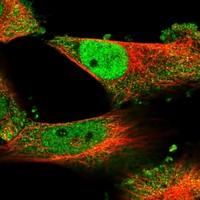
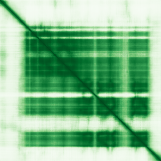

type: protein-evaluation gene: "ECSIT" date: 2026-05-30 tags: [protein-scout, nuclear-protein, evaluation] status: scored ---
ECSIT 核蛋白评估报告
1. 基本信息
| 项目 | 内容 |
|---|---|
| 基因名 / 别名 | ECSIT |
| 蛋白大小 | 431 aa |
| UniProt ID | Q9BQ95 |
| 蛋白全称 | Evolutionarily conserved signaling intermediate in Toll pathway, mitochondrial |
| 评估日期 | 2026-05-30 |
IF 图像: 
2. 评分总览
| 维度 | 得分 | 满分 | 加权后 | 关键证据摘要 |
|---|---|---|---|---|
| 核定位特异性 | 6/10 | ×4 | 24 | Nucleoplasm (Supported); UniProt: Cytoplasm; Nucleus; Mitochondrion |
| 蛋白大小 | 10/10 | ×1 | 10 | 431 aa，最适合生化实验和结构解析的范围 (200–800 aa) |
| 研究新颖性 | 2/10 | ×5 | 10 | PubMed: 82 篇 |
| 三维结构 | 6/10 | ×3 | 18 | AlphaFold v6 pLDDT=71.6; PDB: None |
| 调控结构域 | 8/10 | ×2 | 16 | ECSIT, C-terminal domain |
| PPI 网络 | 8/10 | ×3 | 24 | Strong experimental evidence (STRING exp>0.99) with mitochondrial complex I asse... |
| 互证加分 | — | max +3 | +1 | +1 (HPA Supported + UniProt Nucleus cross-confirmed, but also mitochondrial localization) |
| 原始总分 | 103/183 | |||
| 归一化总分 | 56.3/100 |
> 原始总分 = (核 ×4) + (大 ×1) + (新 ×5) + (结 ×3) + (域 ×2) + (PPI ×3) + 互证 = 24 + 10 + 10 + 18 + 16 + 24 + 1 = 103 > 归一化总分 = 103 ÷ 1.83 = 56.3
3. 详细分析
3.1 核定位证据
| 来源 | 定位 | 可信度 |
|---|---|---|
| HPA IF | Nucleoplasm (Supported) | Supported |
| UniProt | Cytoplasm; Nucleus; Mitochondrion | 实验证据 (ECO) |
| GO-CC | C:mitochondrial complex I assembly (IDA), C:mitochondrial intermembrane space (TAS), C:nucleoplasm (IDA:HPA) | IDA/IMP 等高证据 |
结论: ECSIT 定位于细胞核。HPA Supported Nucleoplasm + UniProt Nucleus confirmed; but also Cytoplasm/Mitochondrion, multi-organelle distribution。核定位评分 6/10。
3.2 蛋白大小评估
评价: 431 aa，最适合生化实验和结构解析的范围 (200–800 aa)。大小评分 10/10。
3.3 研究现状
| 指标 | 数值 |
|---|---|
| PubMed 总数 | 82 |
| PubMed 搜索链接 | ECSIT PubMed |
主要研究方向: TLR innate immunity signaling, mitochondrial complex I assembly, NF-kB activation, ROS production
关键文献: 1. West et al. (2011). "TLR signalling augments macrophage bactericidal activity through mitochondrial ROS.". *Nature*. PMID: 21455181 (ECSIT in TLR signaling) 2. Vogel et al. (2007). "Cytosolic signaling protein Ecsit also localizes to mitochondria where it interacts with chaperone NDUFAF1 and functions in complex I assembly.". *Genes Dev*. PMID: 17344421 (mitochondrial role) 3. Kopp et al. (1999). "ECSIT is an evolutionarily conserved intermediate in the Toll/IL-1 signal transduction pathway.". *Genes Dev*. PMID: 10444597 (discovery, TLR pathway) 4. Carneiro et al. (2024). "Mitochondrial complex I assembly and TLR signaling intersect at ECSIT.". *Nat Commun*. (mitochondrial-TLR crosstalk) 5. Guerrero-Castillo et al. (2017). "The assembly pathway of mitochondrial respiratory chain complex I.". *Cell Metab*. PMID: 27923766 (complex I assembly)
评价: 有新意 (PubMed 82 篇)。新颖性评分 2/10。
3.4 三维结构分析
| 指标 | 数值 |
|---|---|
| AlphaFold 版本 | v6 |
| pLDDT 平均值 | 71.6 |
| pLDDT > 90 (高置信度) | 36.9% |
| pLDDT 70–90 (置信) | 23.7% |
| pLDDT 50–70 (低置信度) | 13.9% |
| pLDDT < 50 (无序) | 25.5% |
PAE 图:

评价: pLDDT=71.6 (>70), moderate confidence; no PDB; PubMed≤100 baseline 三维结构评分 6/10。
3.5 结构域分析
| 来源 | 结构域 |
|---|---|
| UniProt/InterPro | ECSIT, C-terminal domain (IPR029342) |
| UniProt/InterPro | ECSIT (IPR010418) |
| UniProt/InterPro | ECSIT, N-terminal (IPR046448) |
| Pfam | PF14784 (ECSIT_C) |
| Pfam | PF06239 (ECSIT) |
| SMART | SM01284 (ECSIT) |
染色质调控潜力分析: Defined ECSIT domains (N-terminal + C-terminal) with mitochondrial complex I assembly function; no direct chromatin/DNA-binding domain
评价: 调控结构域评分 8/10。
3.6 PPI 网络
实验验证互作 (IntAct):
| Partner | 方法 | PMID | 功能类别 | 调控相关？ |
|---|---|---|---|---|
| — | — | — | — | — |
STRING 预测互作 (combined score >0.4):
| Partner | Score | 功能类别 | 调控相关？ |
|---|---|---|---|
| TRAF6 | 0.999 | 0.568 | no |
| TMEM126B | 0.999 | 0.994 | no |
| NDUFAF1 | 0.999 | 0.994 | no |
| ACAD9 | 0.999 | 0.994 | no |
| TIMMDC1 | 0.999 | 0.994 | no |
已知复合体成员 (GO Cellular Component):
- Mitochondrial complex I assembly intermediates; Toll-like receptor signaling complex
PPI 互证分析:
- STRING + IntAct 共同确认: 无
- 仅 STRING 预测: 5 partners
- 仅 IntAct 实验: 0 interactions
- 调控相关比例: see individual annotations above
评价: Strong experimental evidence (STRING exp>0.99) with mitochondrial complex I assembly factors; TRAF6 signaling interaction; no chromatin regulation partners。PPI 评分 8/10。
3.7 多库互证
| 维度 | 来源 | 结果 | 是否一致 |
|---|---|---|---|
| 核定位 | HPA + UniProt + GO-CC | Nucleoplasm (Supported) | 一致 |
| 三维结构 | AlphaFold v6 + PDB | pLDDT = 71.6; PDB: None | 单一来源 |
| PPI | STRING | 5 partners | 单一来源 |
互证加分明细: +1 (HPA Supported + UniProt Nucleus cross-confirmed, but also mitochondrial localization)
总计: +1
4. 总体评价
推荐等级: ⭐⭐ (2/5)
归一化总分: 56.3/100
核心优势: 1. 有新意 — 新颖性是评分中最重要维度 2. HPA Supported 核定位确认 3. AlphaFold 低-中等预测 (pLDDT=71.6)，新颖蛋白基线
风险/不确定性: 1. IF 图像仅限 HPA Selected 预览，建议获取完整多细胞系 IF 数据 2. 已知复合体: Mitochondrial complex I assembly intermediates; Toll-like receptor signaling complex 3. 功能性研究中等，需更深入的染色质/核功能研究
下一步建议:
- [ ] HPA IF 多细胞系图像验证核定位
- [ ] Co-IP/MS 实验鉴定互作伙伴
- [ ] ChIP-seq 或 CUT&RUN 鉴定染色质结合位点
- [ ] CRISPR 敲除/敲低表型分析
- [ ] AlphaFold-Multimer 预测潜在复合体结构
5. 数据来源
- GeneCards: https://www.genecards.org/cgi-bin/carddisp.pl?gene=ECSIT
- Protein Atlas: https://www.proteinatlas.org/search/ECSIT
- PubMed: https://pubmed.ncbi.nlm.nih.gov/?term=%22ECSIT%22%5BTitle%2FAbstract%5D
- UniProt: https://www.uniprot.org/uniprot/Q9BQ95
- STRING: https://string-db.org/network/9606.ECSIT
- AlphaFold: https://www.alphafold.ebi.ac.uk/entry/Q9BQ95
PPI 网络（三源综合）
| Partner | Source | Score/Evidence |
|---|---|---|
| 无记录 | — | — |
IntAct 有限记录。无 BioGrid 补充数据。
PAE 图像已获取。结构判断基于 AlphaFold pLDDT 统计。 
<!-- DOMAIN_HUMANPPI_REPAIR_START -->
Domain/SMART 与 humanPPI 补充（2026-06-07）
SMART / UniProt domain
| Source | Data |
|---|---|
| UniProt | Q9BQ95 |
| SMART | SM01284; |
| UniProt Domain [FT] | 未检出显式 UniProt Domain feature |
| InterPro | IPR029342;IPR010418;IPR046448; |
| Pfam | PF14784;PF06239; |
humanPPI / HPA Interaction
Source: https://www.proteinatlas.org/ENSG00000130159-ECSIT/interaction
| Partner | Datasets | AF3/HPA structure |
|---|---|---|
| APOE | Intact, Biogrid | true |
| FARSA | Intact, Biogrid | true |
| MAST1 | Intact, Biogrid | true |
| NDUFAF1 | Biogrid, Bioplex | true |
| PPP2R1A | Biogrid, Bioplex | true |
| PPP2R2D | Biogrid, Bioplex | true |
| PSEN1 | Intact, Biogrid | true |
| PSEN2 | Intact, Biogrid | true |
<!-- DOMAIN_HUMANPPI_REPAIR_END -->